Секция-2
Назовем эту секцию "Stay safe", по названию заголовка.
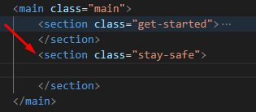
Создание структуры
Итак, новый блок stay-safe. Дальше, используем сниппет "cnt" <div class="имя блока__container> и создаем ограничивающий контейнер
stay-safe__container

Тут у нас изображение и снизу сделана тень. Сразу создадим папку для изображений stay-safe_img. Обозначим наш блок линией. Этот блок белый, а снизу опять серенький
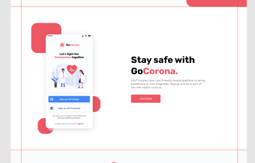
Продолжим дальше анализ. Есть весь блок, есть ограничивающий контейнер. Для изображения нам придется делать какие-то отступы. И разделим наш контейнер линейкой на 2 половинки - 1057 разделим на 2 получим 528 пикселей
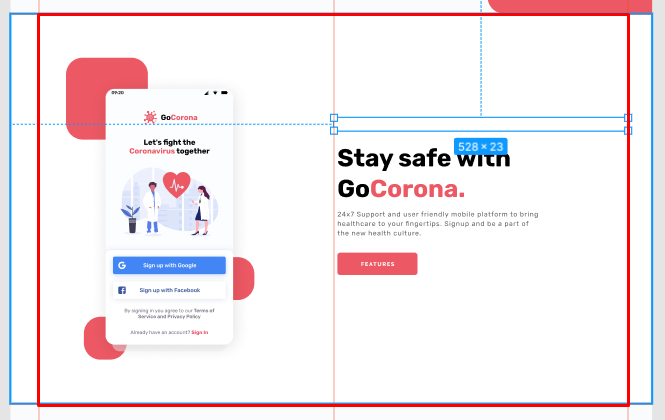
Выгрузим картинку. Это у нас растровое изображение, значит делаем "Export" в png. Здесь у нас изображено приложение, поэтому назовем картинку "app".
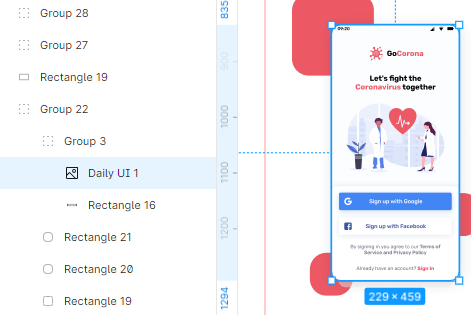 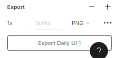
Верстка, я бы сказал, она не для технарей с творческой жилкой, а она как раз пятьдесят на пятьдесят - половина технические навыки, половина творческие. Потому что, ни один верстальщик не будет зарабатывать много, если он не умеет сделать качественный адаптив, не умеет применить качественную анимацию. А это все требует творчества, требует где-то дизайнерского чутья и так далее.
Это не про сопоставление цветов - это про удобство, про восприятие. Это еще важнее. Вообще, верстка мне с каждым годом все больше и больше нравится. Я понимаю, насколько она важна в процессе разработки сайта. Очень многие ее недооценивают, но они просто не видели подхода, правильного, к верстке. Естественно, еще на это все, нужно помнить про доступность, про семантику.
Все думают, что верстка это что там, что там верстка - ничего особенного. Все зависит от того, как именно вы к этому подходите и какой уровень вы даете.
Итак, контейнер мы создали и тут у нас две половинки - изображение и контент
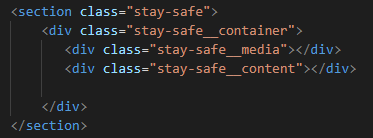
И, вот здесь, та самая БЭМ-магия, о которой все говорят. У нас здесь контентный блок. Мы его, практически, сверстали. Сейчас происходит молниеносная верстка. В get-started__content мы просто копируем содержимое и вставляем в контентный блок нашей секции, меняем только класс элемента, убираем у заголовка модификатор, который у нас красил в голубой, меняем текст и надпись на кнопке. Тут еще <h1> нужно поменять на <h2>. Потому что <h1> стоит использовать один на странице - самых главных заголовков не может быть много, он должен быть только один
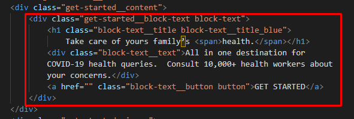 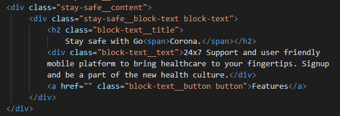
И, у нас готовый полностью блок. Вот она, магия БЭМа. Вот она, магия переиспользования блоков. Вот она, магия переиспользования кода. Всего несколько секунд потребовалось. Так что, обязательно используйте переиспользование кода, обязательно используйте методологию
Блок stay-safe__media - добавим ему еще один класс media-stay-safe, По этому классу создадим блок с элементом __image для работы с картинкой и поместим саму картинку
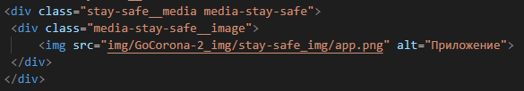
Движемся дальше и, собственно, пойдем сверстаем этот блок. Для этого выделяем его полностью, затем Ctrl+Shift+X и переносим классы в css. Все что касается block-text нам не нужно - оно уже сверстано. media опустим ниже - здесь изображение мы будем отдельно верстать.
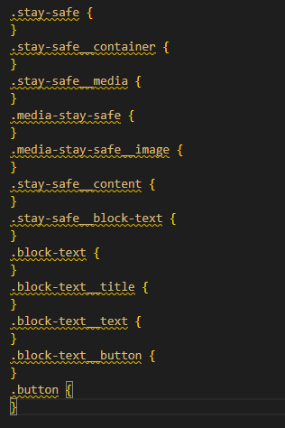 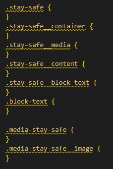
У нас есть отступ до изображения 135 пикселей сверху и 106 снизу. Сразу подумаем, как поступить с блоками декора вокруг картинки. Есть смысл сделать это следующим образом - я создаю объект визуально, построю коробочку из линий и уже внутри неё буду размещать все элементы
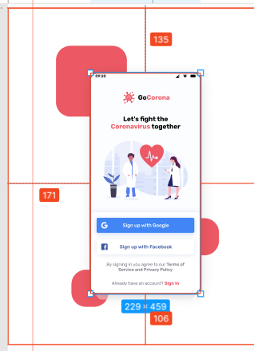 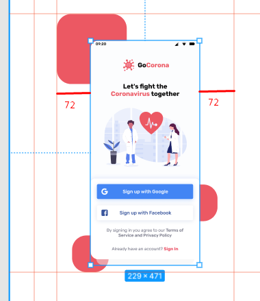
Сверху и снизу отступы по 80 пикселей
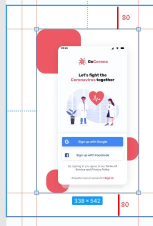 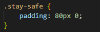
По картинке - я все-таки уберу тень, она мне мешает, и выгружу картинку без тени. В Фигме в эффектах в дизайне можно выделить блок у которого, есть тень и скрыть, нажав на глазик. Имейте это ввиду. Картинка по умолчанию выгружается с тенью, это нам не надо - тень мы добавим самостоятельно. Теперь картинка у нас своих собственных размеров. Именно так нужно делать
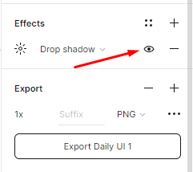 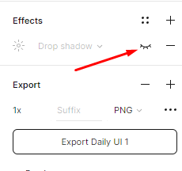
Едем дальше. stay-safe__container - делаем флекс-блок, чтобы разместить объекты в горизонтали и второе свойство - по центру вертикали . stay-safe__media - половина ширины флекс-бокса, stay-safe__content - тоже половина ширины флекс-бокса
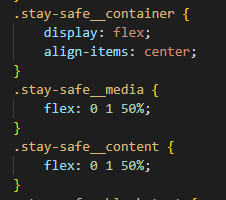 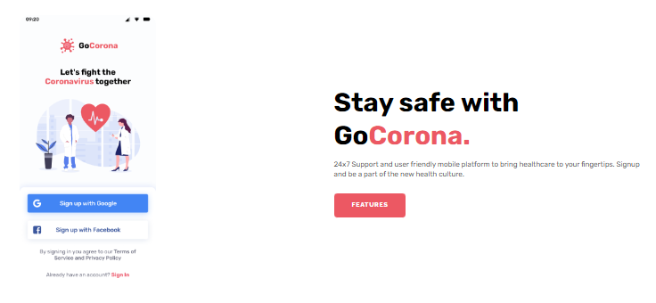
И, теперь весь блок изображения с декором - я хочу померить его общую ширину. Получается 373 пикселя. Задаем ширину для media-stay-safe
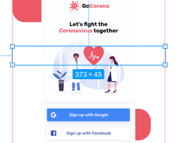 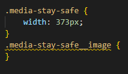
Дальше, в главном медиа-блоке stay-safe__media выставим его по центру. И сам блок сделаем строчно-блочным и зададим относительное позиционирование
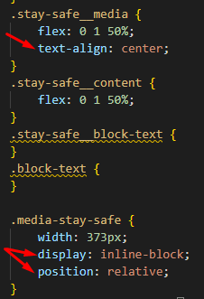
Врядли получится провернуть этот фокус, потому что по макету он не по центру, а просто отступает. Придется вытащить из stay-safe__media класс media-stay-safe и сделать из него отдельный объект.
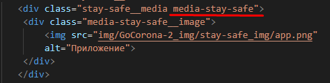 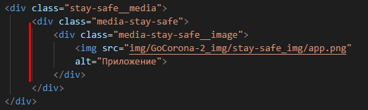
И уберем заданные свойства - центровку и строчно-блочные свойства. Оставляем только относительное позиционирование
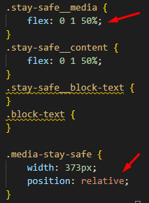
Здесь у нас левый отступ 47 пикселей. Так и запишем. И уже внутри блока мы центруем изображение
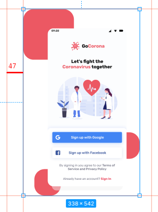 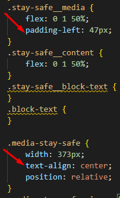 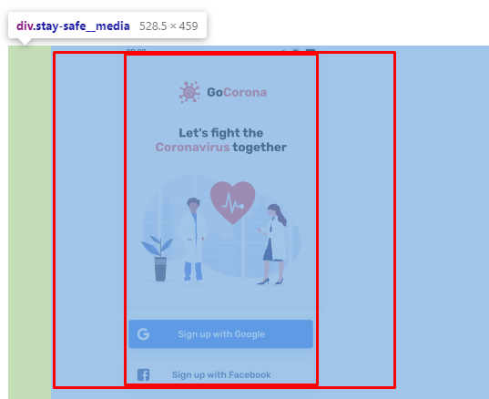
Дальше, можем сразу на картинку навешать тень. Сначала откроем "глазик", чтобы включить ее и скопируем значение. А также перенесем закругление углов
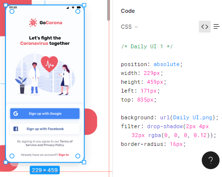 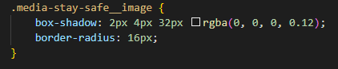
Тень сейчас применилась ко всему блоку

Поэтому, присвоим блоку строчно-блочные свойства, чтобы объект не занимал всю ширину, а был по ширине картинки
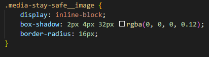